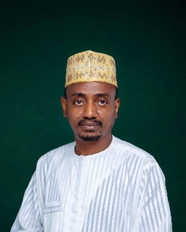
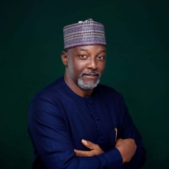
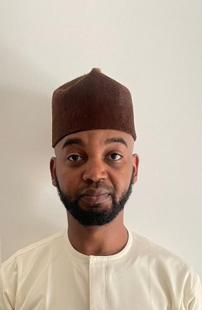
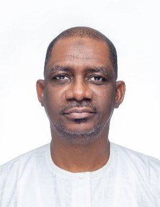

Leadership
Directors
Meet our Directors.

Mr. Ibrahim Sani Bello
Chairman

Mr. Zulkifl Abba
Director

Mr. Ahmed Sani Bello
Director
Mr. Suleiman Sani Bello
Director

Alhaji Babangida Inuwa
Director
Mr. Ayodeji Gbeleyi
Director